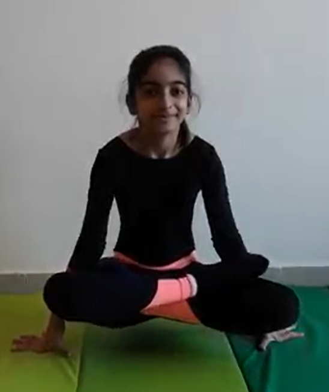

LIFTING LOTUS POSE

Steps to perform Lifting Lotus Pose
- Begin in Lotus Pose (Padmasana). Your legs should be crossed with the top of each foot resting on the opposite thigh.
- BPlace your hands on the floor on either side of your hips.
- Exhale as you press your palms firmly into the floor. Draw your abdominal muscles in and up, and lift your legs and buttocks off of the floor.
- Hold yourself suspended for five breaths, then release by lowering yourself back to the mat. Change the cross of your legs and repeat for the same length of time. More advanced practitioners can hold the pose for up to 100 breaths.